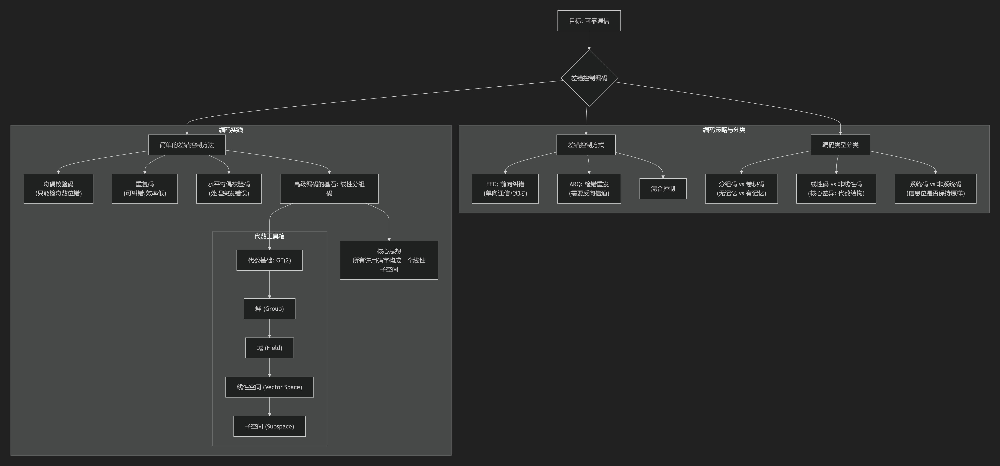

🌟 欢迎来到第7讲：差错控制编码——构建数字世界的安全护盾 #
(对应教材《数字通信原理》第八章)
在上一讲中，香农的理论如同灯塔，照亮了可靠通信的可能性，他告诉我们：只要信息速率低于信道容量，就存在能够实现任意低错误率的编码。但香农并没有给出具体的造船图纸。本讲，我们就是来学习如何建造这些"船"——差错控制码。
我们将从最直观的检错思想开始，比如奇偶校验，然后深入到更强大、更结构化的线性分组码。为了建造更坚固的船，我们还需要学习它的基础材料和设计原理，这就是抽象代数（群、域、线性空间）的用武之地。不要担心数学的抽象，我会用最直观的方式，告诉你这些工具如何帮助我们轻松地构建和分析强大的编码。
学习目标：
- 掌握差错控制编码的核心分类（分组码/卷积码，线性/非线性码）和主要方式（FEC, ARQ）。
- 理解并能应用简单的差错控制方法，如奇偶校验码和重复码。
- 初步掌握线性分组码背后的代数基础，理解为什么"线性"如此重要。
- 深刻理解"许用码字"和"禁用码字"的概念，以及它是如何实现检错的。
📚 本讲知识地图 #

📝 本讲主要内容 #
1. 差错控制编码的基本概念与分类 #
1.1. 什么是差错控制编码？ #
- 定义：通过代数方法，在原始的 k 比特信息码组中，增加 n-k 个监督位（或校验位），形成一个 n 比特的码字。这些监督位和信息位之间存在特定的关联关系。
- ✨ 生动的比喻：带"证书"的快递
- 信息码组 (k位)：你要寄送的贵重物品。
- 监督位 (n-k位)：为这个物品生成的独一无二的"防伪证书"，证书上的信息（如重量、尺寸、序列号）是根据物品本身计算出来的。
- 码字 (n位)：物品 + 证书，一起打包成一个快递。
- 接收端工作：收到快递后，先不看物品，而是根据收到的物品重新计算一遍"证书"信息，然后与快递里附带的证书对比。如果对得上，说明物品完好无损；如果对不上，说明物品在运输中被调包或损坏了。
- 编码效率 (速率)：衡量增加冗余的代价。 $$ \text{编码效率} = \frac{k}{n} $$
1.2. 编码的"门派"：主要类型 #
为了应对不同的通信场景，工程师们发展出了不同类型的编码。
| 分类维度 | 类型A | 类型B | 核心区别 |
|---|---|---|---|
| 代数结构 | 线性码 | 非线性码 | 监督位与信息位之间是否为线性关系。线性码结构优美，易于分析和实现，是本章的绝对主角。 |
| 处理方式 | 分组码 | 卷积码 | 分组码：将信息分块（组），独立编码，无记忆性。卷积码：编码当前组时，不仅看当前信息，还与前面几组信息有关，有记忆性。 |
| 码字结构 | 系统码 | 非系统码 | 系统码：编码后，原始k位信息码组保持原样，n-k位监督位附在旁边。非系统码：信息位和监督位被打乱混合。 |
1.3. 纠错的"战术"：主要方式 #
根据通信系统（如是否有反向信道）和业务需求（如是否要求低延迟），我们有不同的错误处理策略。
| 方式 | 英文缩写 | 工作原理 | 优点 | 缺点/要求 |
|---|---|---|---|---|
| 检错重发 | ARQ | 接收端只检测错误。若发现错误，通过反向信道请求发送端重传。 | 编码效率高，实现相对简单。 | 需要双向信道，会引入重传时延，不适用于实时通信。 |
| 前向纠错 | FEC | 接收端不仅能检测错误，还能定位并纠正一定范围内的错误。 | 无需反向信道，实时性好。 | 编码开销大（效率较低），编译码算法复杂。 |
| 混合差错控制 | H-ARQ | 结合两者优点。先尝试用FEC纠错，若错误过多无法纠正，再启动ARQ请求重传。 | 兼顾了效率和可靠性。 | 系统最复杂。 |
2. 简单但重要的差错控制方法 #
在学习复杂的编码之前，我们先从几个简单的"入门级"编码开始，它们清晰地揭示了差错控制的核心思想。
2.1. 奇偶校验码 (Parity Check Code) #
- 思想：增加1位监督位，使得整个码字中"1"的个数满足奇数或偶数的要求。
- 偶校验：信息位 $a\_{n-1}a\_{n-2}...a\_1$
- 监督位 $a\_0 = a\_{n-1} \oplus a\_{n-2} \oplus \dots \oplus a\_1$ （$\oplus$ 表示模2加，即异或）
- 校验关系：$a\_{n-1} \oplus a\_{n-2} \oplus \dots \oplus a\_1 \oplus a\_0 = 0$
- 编码后的码字中，总有偶数个"1"。
- 奇校验：
- 监督位 $a\_0 = a\_{n-1} \oplus a\_{n-2} \oplus \dots \oplus a\_1 \oplus 1$
- 校验关系：$a\_{n-1} \oplus a\_{n-2} \oplus \dots \oplus a\_1 \oplus a\_0 = 1$
- 编码后的码字中，总有奇数个"1"。
- 能力：
- 能发现：所有奇数个比特的错误（1位错、3位错…）。因为奇数个错误会改变码字中"1"的个数的奇偶性，导致校验关系被破坏。
- 不能发现：所有偶数个比特的错误（2位错、4位错…）。因为偶数个错误不会改变奇偶性。
2.2. 核心概念：许用码字 vs. 禁用码字 #
差错控制的本质，是在所有可能的n位码字构成的巨大空间中，精心挑选出一小部分作为许用码字集 {C}（也叫码本）。其余的码字都是禁用码字。
- 检错原理：
- 发送端只会发送许用码字。
- 如果信道传输无误，接收端收到的就是原来的许用码字。
- 如果传输出现错误，许用码字就有可能变成一个禁用码字。
- 只要收到的码字是禁用码字，我们就能 100% 确定：传输肯定出错了！
- 检错失效：当一个许用码字出错后，变成了另一个许用码字，此时错误无法被发现。
2.3. 【实例剖析】许用码字的选择艺术 (PPT p9) #
以3位二进制码组为例，总共有 $2^3=8$ 种组合：{000, 001, 010, 011, 100, 101, 110, 111}。
- (a) 无编码
- 许用码字: 全部8个。
- 能力: 携带3比特信息，但无任何差错控制能力。任何错误都会使一个许用码字变成另一个。
- (b) 偶校验码
- 许用码字: {000, 011, 101, 110} (所有含偶数个1的码字)。共4个。
- 禁用码字: {111, 001, 010, 100} (所有含奇数个1的码字)。
- 能力: 携带2比特信息 ($2^k=4 \Rightarrow k=2$) 。能检测任意1位错误 (因为1位错误会使奇偶性改变，从许用码字跳到禁用码字)，但不能检测2位错误 (例如 000 错两位成 011，仍是许用码字)。
- (c) (3,1) 重复码
- 许用码字: {000, 111}。共2个。
- 禁用码字: {001, 010, 100, 011, 101, 110}。
- 能力: 携带1比特信息 ($k=1$) 。
- 检错: 能检测任意1位和2位错误，因为这些错误都会落入禁用码字区。
- 纠错: 能纠正任意1位错误。采用"择多译码"（少数服从多数），例如收到
001，因为它离000更近，就译码为000。
- 失效: 3位错误 (
000->111) 无法被发现，反而会被错误地"确认"。
- 本例启示:
- 没有免费的午餐: 差错控制能力越强，冗余开销越大，编码效率 (k/n) 越低。
- 能力有限: 任何编码的检错/纠错能力都有上限。
- 设计是关键: 合理地选择许用码字，是编码设计的核心。
3. 高级编码的基石：代数基础 #
要设计比奇偶校验和重复码更高效、更强大的编码，我们需要引入数学工具。线性分组码的整个理论体系都构建在有限域，特别是二元域 GF(2) 的代数结构之上。
3.1. 关键的代数结构 #
下面是构建线性码所需的最核心的几个概念，它们层层递进：
| 结构 | 定义摘要 | 对编码的意义 |
|---|---|---|
| 群 (Group) | 一个集合 + 一个满足封闭性、结合律、有单位元、有逆元的运算。 | 提供了"加法"和"减法"的基本框架。 |
| 域 (Field) | 一个集合 + 两种运算（通常是加法和乘法），满足加法交换群、乘法交换群（除0外）、乘法对加法满足分配律。 | 提供了完整的"加减乘除"四则运算。二元域GF(2) 是所有二进制编码的数学基础。 |
| GF(2) | 集合为 {0, 1}，加法为模2加(异或)，乘法为普通乘法(与)。 | 这是二进制编码的世界。1+1=0 这个特性是线性码所有优美性质的根源。 |
| 线性空间 | 一个域F（如GF(2)） + 一个向量集合V，定义了向量加法和标量乘法，并满足一系列性质。 | 将n位码字看作n维向量。所有n位码字构成的集合就是一个线性空间。 |
| 子空间 | 线性空间 V 的一个子集 S，如果 S 本身也满足线性空间的所有条件，则 S 是 V 的子空间。 | 这是线性分组码的精髓：一个 (n,k) 线性分组码的所有许用码字，恰好构成了n维线性空间中的一个k维子空间！ |
- 核心思想总结：我们把 n 位的二进制序列看作是 GF(2) 上的 n 维向量。一个 (n,k) 线性分组码的全部 $2^k$ 个许用码字，不是随机构成的，而是形成了一个结构优美的 k 维子空间。这个"子空间"的特性，使得我们能用线性代数（如矩阵）的工具来非常高效地进行编码和校验。
🔗 知识关联与应用 #
- 承上启下：本章是香农第二定理的工程实现。香农证明了"好码"的存在性，而本章开始具体学习如何构造这些码，从简单的奇偶校验，到未来将要学习的基于代数理论的汉明码、循环码等。
- 现实应用：
- 内存条 (ECC RAM): 高端服务器和工作站使用的内存条通常带有ECC（Error Correcting Code）功能，它使用类似汉明码的线性分组码，能自动检测并纠正单位比特的内存错误，保证系统稳定性。
- SATA/PCIe 总线: 你电脑内部硬盘和主板之间的数据传输，都使用了CRC（循环冗余校验，一种线性码）来确保数据在高速传输中没有出错。
- 条形码/二维码: 商品上的条形码，其最后一位通常是校验位，就是一种最简单的差错控制编码，防止扫描识别错误。
🤔 引导式提问 #
- 为什么在差错控制编码领域，“线性码"占据了统治地位？“线性"这个性质到底给编码和译码带来了哪些具体的好处？ (提示：思考生成和校验的复杂度)
- (3,1)重复码的编码效率仅为1/3，非常低。但在什么样极端的信道条件下，这种看似"笨拙"的编码反而可能是一种合理甚至最优的选择？
- 我们知道，奇偶校验码无法检测出偶数位的错误。请设想一个场景，你是一位通信工程师，虽然你知道这个弱点，但你仍然决定在一个系统中使用简单的奇偶校验。请给出一个你这样选择的合理解释。（提示：从信道特性、成本、复杂度的角度考虑）
💡 本讲总结 #
本讲我们正式拉开了差错控制编码的大幕。我们首先从宏观上对编码进行了分类，并了解了FEC和ARQ两种核心策略。接着，我们通过奇偶校验、重复码等简单实例，直观地理解了通过划分"许用/禁用"码字空间来实现检错的核心思想，并体会了编码能力与效率之间的根本性权衡。最重要的是，我们为后续学习更强大的线性分组码铺平了道路，引入了群、域、线性空间等代数工具。请务必理解 “一个线性码就是一个线性子空间” 这一核心观点，它将是解锁后续所有高级编码知识的钥匙。